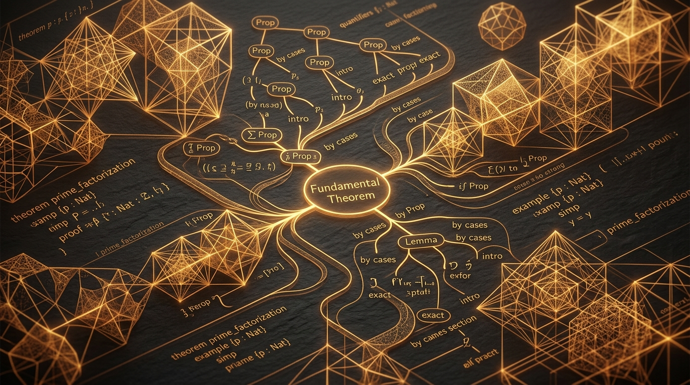

Anthropic Claude Delivers Historic 13M-Line Formal Proof of Fermat's Last Theorem in Lean & Debuts Claude Fable 5.1

SAN FRANCISCO, CA — September 05, 2026 — In what mathematicians and computer scientists are celebrating as a watershed moment in the history of science, Anthropic has revealed that an advanced research variant of Claude has successfully synthesized the world's first complete, machine-checked formalization of Fermat's Last Theorem in the Lean interactive theorem prover.
1. 11 Days, 30,000 Lemmas, and 13 Million Lines of Lean Code
While Sir Andrew Wiles originally published his celebrated proof in 1995 spanning hundreds of pages of complex algebraic geometry and modular forms, formalizing the entire body of work in an interactive proof assistant like Lean was previously projected to take human mathematicians decades of collaborative manual labor.
Operating continuously over an 11-day autonomous run, Anthropic's reasoning agent generated 13.2 million lines of Lean 4 code, rigorously formulating and proving approximately 30,000 intermediate lemmas without hallucination, with every single deduction strictly verified by Lean’s deterministic micro-kernel.
"This is the transition of artificial intelligence from probabilistic generation to absolute mathematical truth. The Lean proof checker does not accept persuasive prose—it requires airtight formal correctness. Claude has demonstrated that frontier AI can conquer the most intricate intellectual peaks in human history."
2. Launch of Claude Fable 5.1 & Claude Mythos 5.1
Alongside this research breakthrough, Anthropic officially released two new production frontier models engineered for specialized developer workflows: Claude Fable 5.1 and Claude Mythos 5.1.
Key Highlights of the September 2026 Model Drop
3. Claudeforce & Model Hardware Standard Previews
Anthropic also announced major momentum across its enterprise partner ecosystem. In collaboration with Salesforce, the open beta of Claudeforce kicks off this month, natively embedding Claude’s deep reasoning into Salesforce Agentforce for real-time customer lifecycle orchestration.
Furthermore, Anthropic introduced the Model Hardware Standard, a universal protocol ensuring autonomous software agents safely interface with hardware actuators and robotic interfaces under strict cryptographic boundary controls.
4. Strategic Momentum Heading Toward Fall 2026
With reports confirming a newly finalized $15 billion credit facility and an impending public prospectus filing, Anthropic is consolidating its reputation as the enterprise standard for safety, mathematical precision, and scalable agentic architecture.